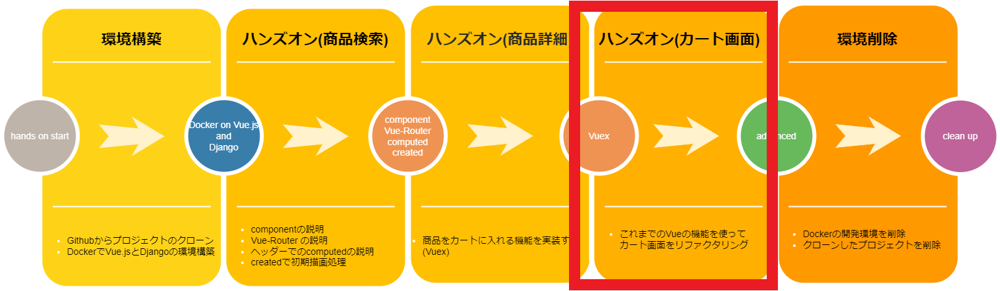
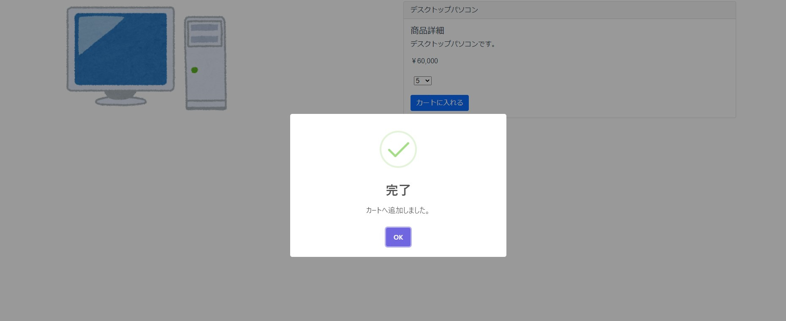
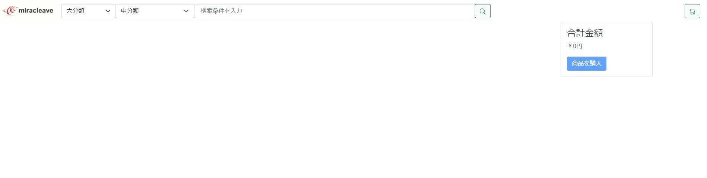
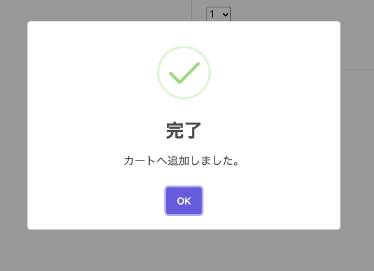
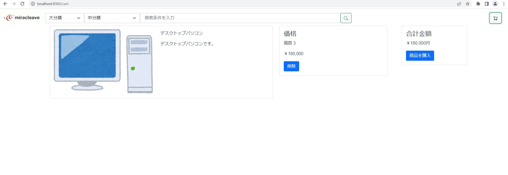

コード修正(商品情報詳細)
1. 修正対象のソース
- src/store/index.js
- src/views/detailView.vue
続いては商品詳細画面です。
この画面は、検索画面で選択した商品の詳細情報が掲載されています。またこの画面でポイントとなるのは、商品をカートに入れる機能です。

2. 商品をカートに追加するための機能を実装しよう。
- src/store/index.js ← 修正するファイル
修正する前に一度、状況を確認してみましょう。
http://localhost:8080/detail?itemCode=2
商品の個数を選択して、カートに入れるボタンを押下してみてください。
「カートに追加しました。」というダイアログが出て、OK ボタンを押下すると検索画面へ戻ります。

では、この状態でカート画面へ遷移してみましょう。
http://localhost:8080/cart
先ほどカートに商品を追加したはずですが、カート画面を開いてみても、何も表示されません。

確認できたところで、改めて修正を進めていきましょう。
今回は Vuex というライブラリを使用して、商品をカートに入れます。
"Vuex"とは Vue.js アプリケーションのための 状態管理パターン + ライブラリです。
https://vuex.vuejs.org/ja/ (Vue.js 公式サイトより)
では、実際に修正していきましょう。今回修正する箇所は"src/store/index.js"の"mutations"の箇所です。
mutations にカートに入れるボタンを押下した際に、商品情報を保持するための処理を追加します。
src/store フォルダ内の index.js を開き、「mutations」を検索します。
変更前
mutations: {
// 商品削除
deleteItem (state, item) {
// 引数で渡された行を削除
state.itemList.splice(item, 1)
},
// 商品リスト初期化
clearItem (state) {
state.itemList = []
}
}
変更後
mutations の中に商品追加の処理「pushItem」を追加してください。
mutations: {
// 商品追加
pushItem (state, item) {
// 引数で渡された配列をまるごとpush
state.itemList.push(item)
},
// 商品削除
deleteItem (state, item) {
// 引数で渡された行を削除
state.itemList.splice(item, 1)
},
// 商品リスト初期化
clearItem (state) {
state.itemList = []
}
},
pushItem は渡された引数を、itemList という名前のリスト変数に追加します。これで商品情報を保持させることができます。
3. カートに入れる機能を追加しよう。
- src/views/detailView.vue ← 今回修正するファイル
ここでは、商品検索で選択した商品情報をカートに入れる処理を追加します。
methods の中にある「additem」の処理を下記のように修正してみましょう。
Ctrl+P(Mac の場合 Command+P)で、「detailView.vue」ファイルを開き、「addItem」を検索します。
変更前
addItem () {
// storeに保存後ダイアログ表示して検索画面へ戻る
this.$swal({
title: '完了',
icon: 'success',
text: 'カートへ追加しました。',
type: 'success',
confirmButtonText: 'OK'
}).then((info) => {
this.$router.push({ path: '/' })
})
}
変更後
addItem の下に商品情報を保持するためのソースを追加してください。
addItem () {
// storeに保存後ダイアログ表示して検索画面に戻る
const param = {
name: this.productName,
description: this.description,
price: this.price,
quantity: Number(this.quantity),
imageUrl: this.img // 商品画像
}
this.$store.commit('pushItem', param)
// storeに保存後ダイアログ表示して検索画面へ戻る
this.$swal({
title: '完了',
icon: 'success',
text: 'カートへ追加しました。',
type: 'success',
confirmButtonText: 'OK'
}).then((info) => {
this.$router.push({ path: '/' })
})
}
まず画面に表示されている商品のパラメーターをオブジェクト param に設定します。それぞれ商品名・商品説明・値段・数量・商品画像です。
次に先ほど追加した「pushItem」を呼び出して商品情報を store に追加します。
書き方としては、this.$store.commit('呼び出す処理名',処理に渡す引数)で store の state の値を変更します。
第一引数を store/index.js の mutations に追加した pushItem にします。
第二引数は商品情報をもった変数 param にすることで、
store/index.js の state の itemList に商品情報を追加します。
カート画面では store の保持している itemList を、getters を使用することでカート画面上に表示させています。
4. 動作確認
動作確認をしてみましょう。 商品詳細画面内の個数プルダウンで任意の商品数を選択肢し、商品を購入のボタンをクリックしてください。
下記のように完了のダイアログが表示され検索画面に遷移します。

商品がカートに入っているか確認してみましょう。
画面右上のショッピングカートのアイコンをクリックすることで、カート画面へ遷移します。
カートに入れた商品が表示されることがわかるかと思います。

次の手順では、今開いたカート画面のソースコードのリファクタリングを行います！
商品を何種類かカートへ追加し、カート画面へ遷移しましょう！